Rule-based detection of suspicious transfers on Android, with the owner deciding what goes through.
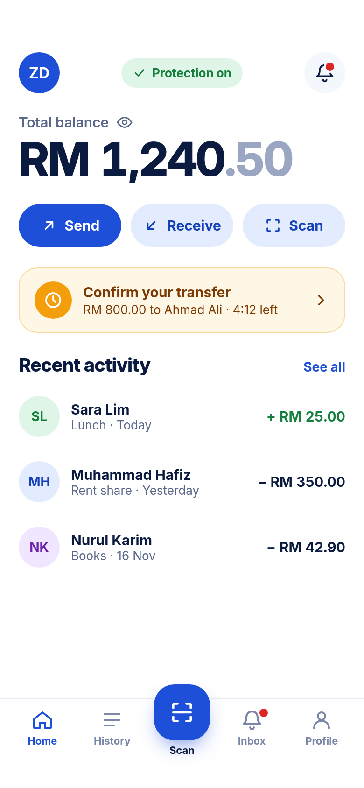
Sign up, log in, PIN
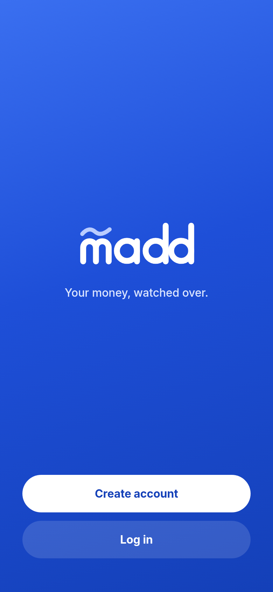
01Splash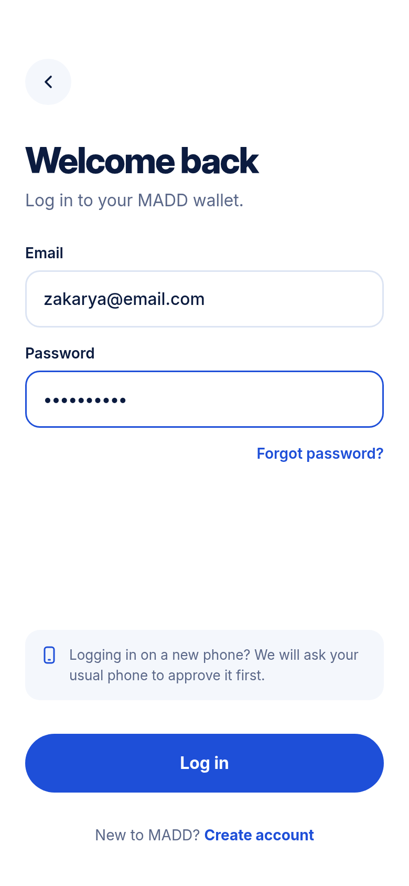
02Log inSend, receive, scan, history
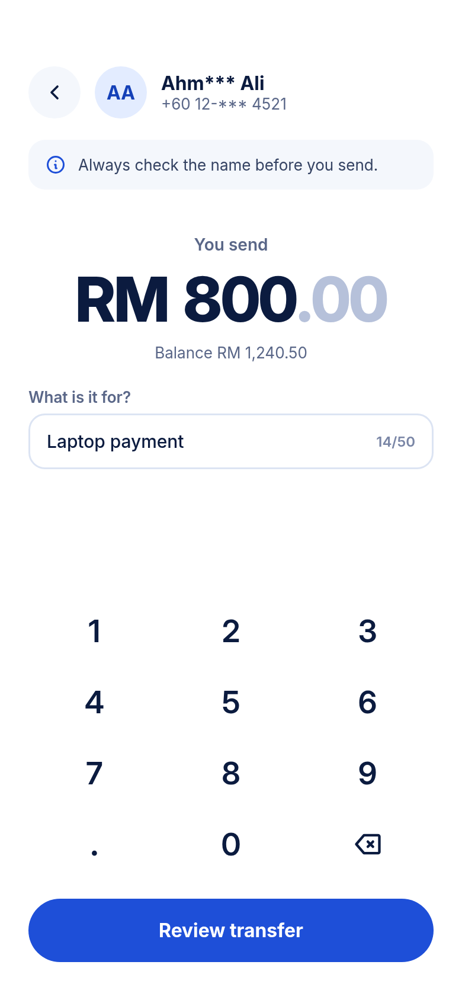
07Amount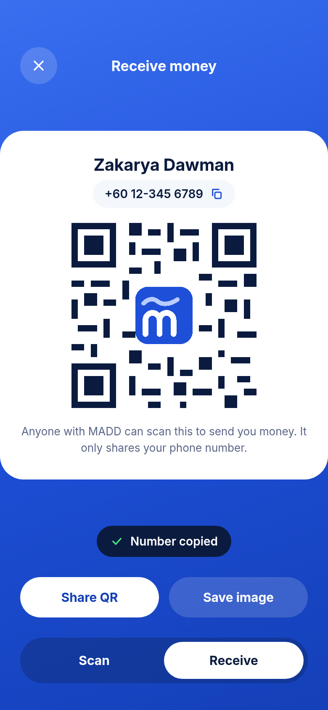
16Receive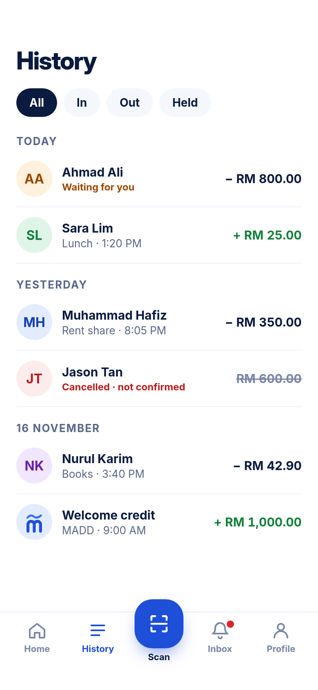
17HistoryHolds, devices, locks
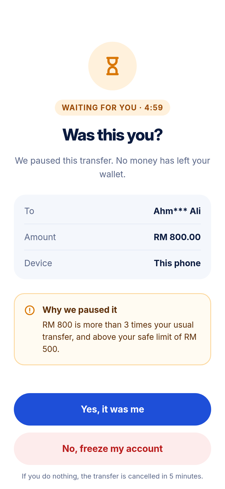
11Held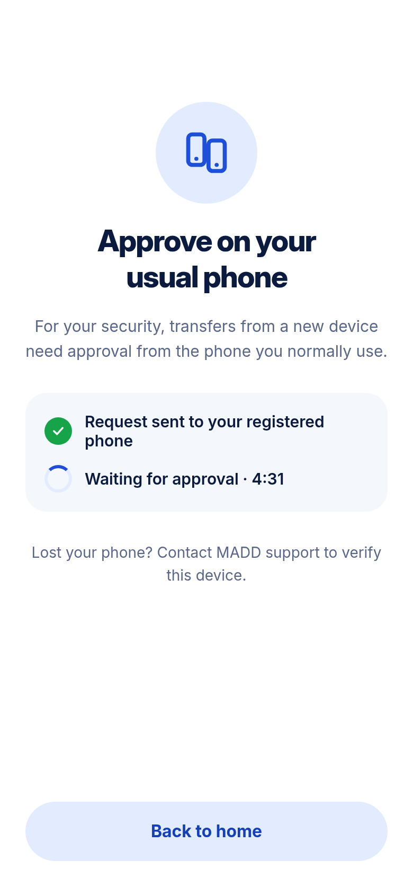
12New phoneInbox, profile, freeze
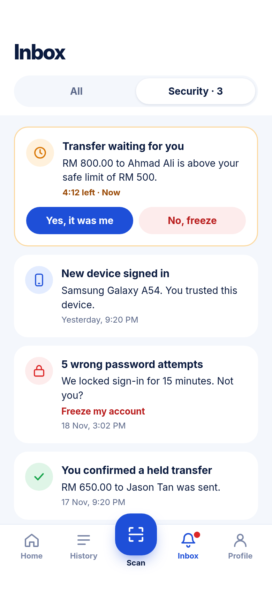
18Security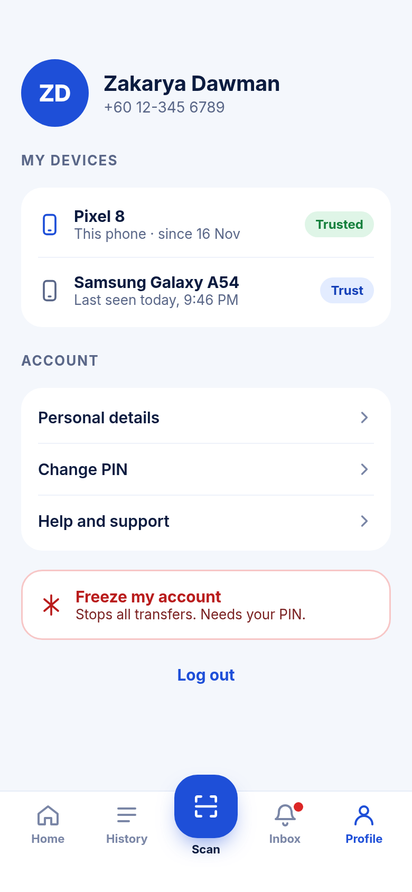
19Profile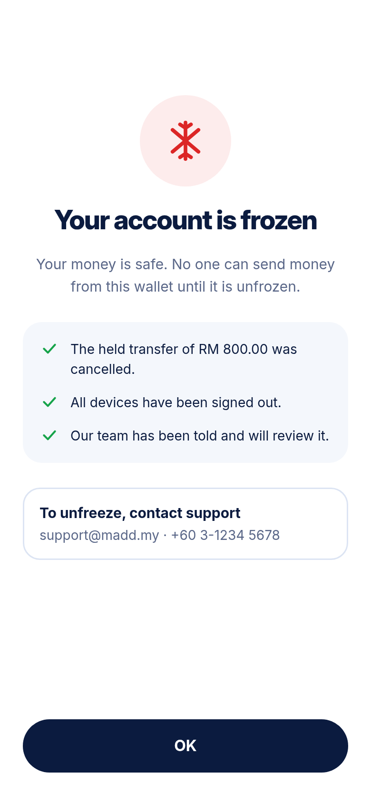
14FrozenTells the owner the 4 rules are watching this account.
Read from the server every time; stored in whole sen, never as a decimal. The eye icon hides it in public.
The three ways money moves. Scan reads another user's QR, which holds only their phone number.
Appears only when a rule has held a transfer. Shows the time left before it is cancelled.
Last three transfers, money in and out, with names masked by the server.
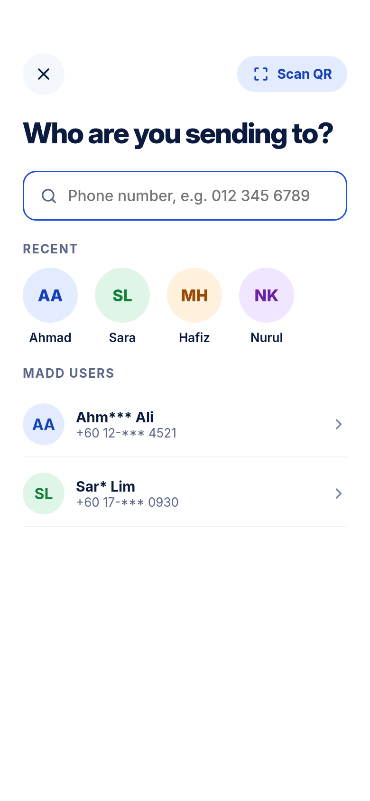
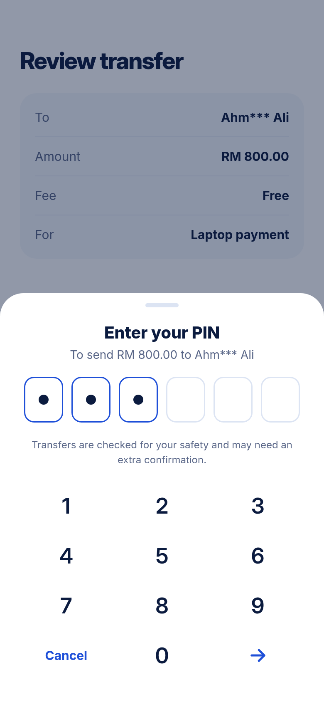
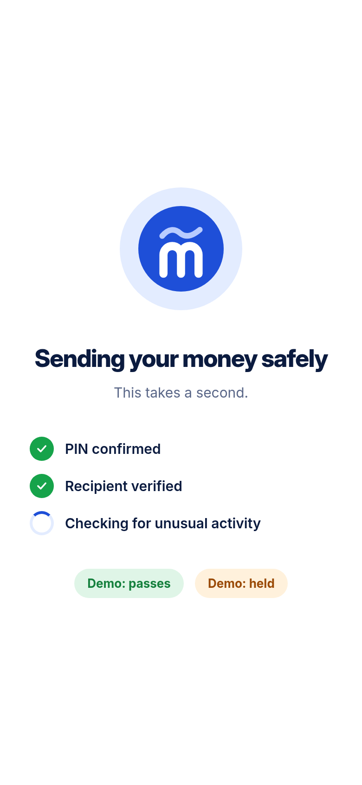
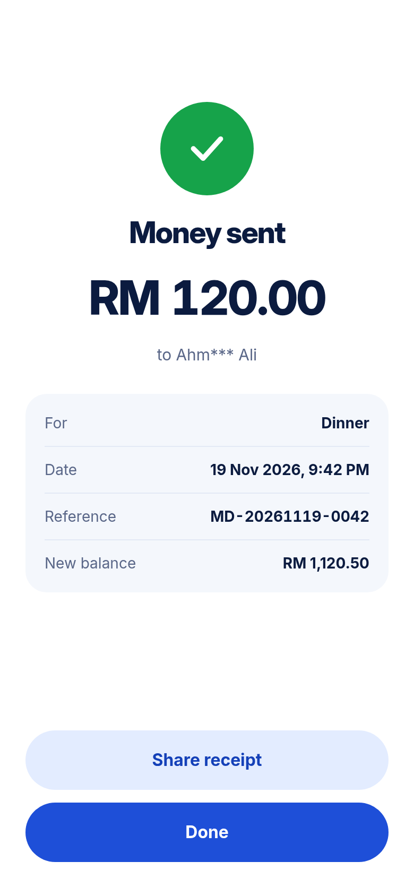
Checked on the server when read, not by a timer. After 5 minutes the transfer is cancelled.
Recipient masked, amount, and which phone sent it.
Plain words built from the rule's own numbers. Here: R1, RM 800 against a RM 500 limit.
Asks for the PIN, re-checks the balance, then sends once.
Cancels the transfer, freezes the account and ends every session on every phone.
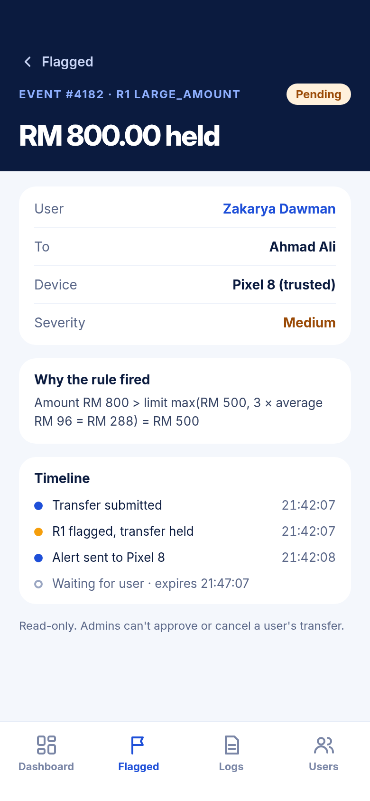
1 2 3 4 5Built as a separate web console. Shown here at phone size as designed; the console uses a side menu.
Every fired rule gets a numbered record and a status: Pending, Confirmed or Rejected.
R1 and R2 are Medium; R3 and R4 are High.
The rule saves its numbers when it fires, so the admin sees the same maths the server used.
Submitted, held, alert sent, then the owner's answer, to the second.
Admins can't approve or cancel a transfer. The log is append-only, enforced by a database trigger.